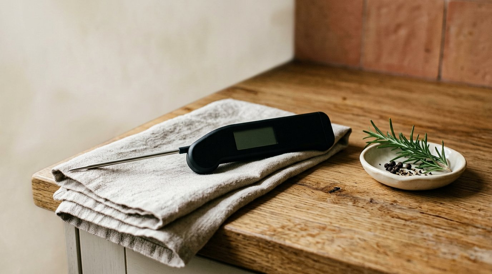

Two ways to know the number
An instant-read, or something that watches while you walk away
One is a tool you keep in a drawer. The other is a small system you leave in the meat. The choice is not about accuracy — it is about whether you are checking a number or watching one climb.
The USDA publishes the safe minimum internal temperature for every meat you are likely to cook, and every one of them is measured with a thermometer. Which thermometer you need depends on a single question: are you standing at the oven, or are you doing something else?
The picks
What each one is actually for


Side by side
What actually differs
Every value is the manufacturer’s stated claim, or a deliberate blank.
| ThermoMaven 1-second thermometer ASIN B0DHZTCNR5 | CHEF iQ Sense Gen3 ASIN B0DZFD6R9Z | |
|---|---|---|
| Form | Handheld instant-readsrc | Wireless leave-in probesrc |
| Probes | 1src | 3src |
| Needs an app | Nosrc | Yessrc |
| Stated read time | 1 second (listing claim)src | Continuoussrc |
| Stated heat limit | — not statedsrc | 1000°F (listing claim)src |
| Stated accuracy | ±0.5°F (listing claim)src | — not statedsrc |
| Water resistance | IP67 (listing claim)src | — not statedsrc |
| Stated temperature range | — not statedsrc | — not statedsrc |
| Best for | Everyday cooking where you want a fast number and a rinse under the tap, and you would rather not manage an app.srcsrc | Long cooks — smoking, roasting, an air-fried chicken — where you want to watch a temperature climb without standing over it.srcsrc |
| Skip it if | You want continuous monitoring of a long cook without opening the oven door. That is a leave-in probe’s job, not an instant-read’s.srcsrc | You do not want a phone in the loop, or you want the connection to be the least interesting thing about a thermometer. Connectivity is the most negative theme on its own listing.srcsrc |
| Full page | Read the pick →srcsrc | Read the pick →srcsrc |
| Listing | Amazon · B0DHZTCNR5src | Amazon · B0DZFD6R9Zsrc |
“Listing claim” means the manufacturer states it in the product title and this desk has not checked it against a certificate or a test report. See FLG-006.
Read before you choose
Guides for this category
Questions to ask before buying a multi-function appliance
Twenty-four presets is not a feature list; it is a menu.
What temperature is actually “done”? A thermometer guide
The USDA publishes safe minimum internal temperatures.
Holiday roast thermometer: instant-read or leave-in?
A whole bird, a rest, and a safe leftover — which thermometer job is this? The USDA minimums and the rest time decide which tool earns its drawer.
Air-fryer leftovers: what reheats safely?
Leftovers and casseroles have a USDA minimum of 165°F.
Buyer questions
Questions buyers ask, answered from the listing
Every answer is attributed to the manufacturer listing, to USDA FSIS, or to Amazon policy. Where the listing does not state a value, the answer says so.
What temperature is actually "done"?
USDA FSIS minimums: beef/pork/veal/lamb steaks, chops and roasts 145°F (62.8°C) with a 3-minute rest; ground meats 160°F (71.1°C); all poultry 165°F (73.9°C); fish and shellfish 145°F (62.8°C); leftovers and casseroles 165°F (73.9°C). Measured with a food thermometer before food leaves the heat source.
Instant-read or leave-in thermometer?
Checking a number takes an instant-read (the ThermoMaven listing states a 1-second read). Watching a temperature climb over a long cook takes a leave-in probe (the CHEF iQ Sense Gen3 listing states three probes and WiFi). Wanting both, honestly, is owning two tools.
Source: Amazon.com Associates Central
Can I see the price and star rating here?
No — deliberately. Amazon permits price display only when Amazon serves the link or data comes via Creators API / PA API. This static site has neither, so no price and no rating is reproduced. Check the listing for today’s price. See FLG-005.
Source: Amazon.com Associates Central
Has this desk tested any of these products?
No. FTC guidance states you cannot talk about your experience with a product you have not tried. Every page therefore describes what the manufacturer listing states, shows its arithmetic, and lists what it cannot tell you. See FLG-004.
Source: U.S. Federal Trade Commission
Why are some cells blank in the comparison table?
Because the listing does not state the value in the data this desk could read, and estimating it would be an inaccurate claim about a product — which the Program Policies prohibit. Blanks are labelled "not stated" rather than filled in. See FLG-014.
Source: Amazon.com Associates Central
Printable tools
Measure first, buy second
Three worksheets you can print or fill on screen. They ask for your measurements, not your email, and nothing you type leaves the browser.
The five-minute capacity worksheet
Measure your kitchen, not the listing. Five minutes with a tape measure and the bag of food you actually buy will tell you more than any quart figure.
Cleanup and counter-space worksheet
The two costs nobody compares at purchase: how much of the sink it takes, and how much of the counter it permanently occupies.
Thermometer calibration worksheet
Calibrate once, then trust it. The ice-water check takes thirty seconds and tells you whether the number on the screen can be believed.